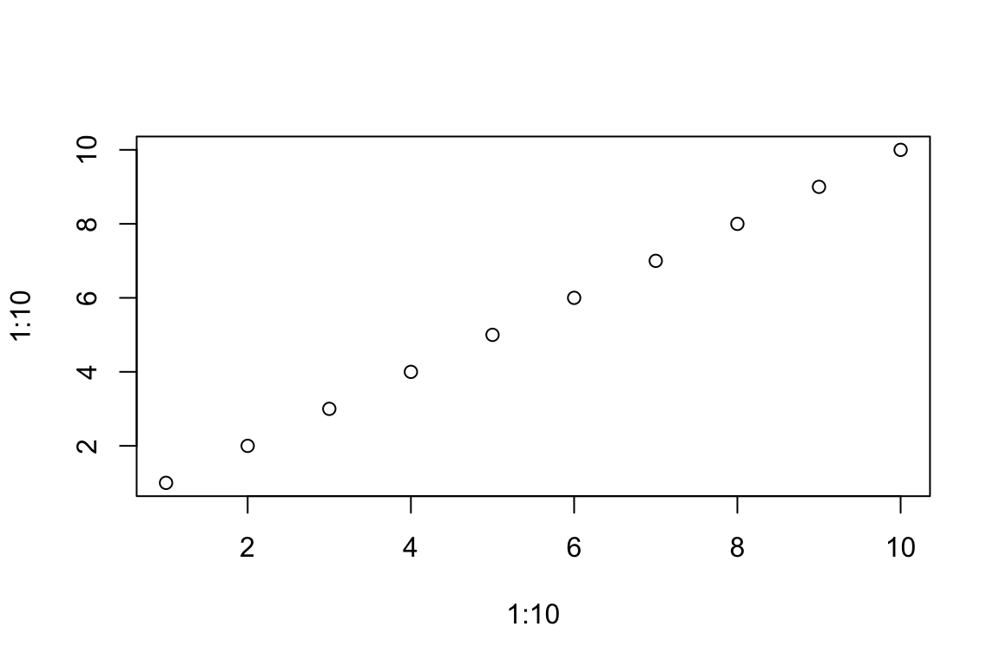

here::here("code", "_common.R") |> source()
# Load packages
if (!requireNamespace("pacman")) install.packages("pacman")
pacman::p_load(tidyr)6 Introduzione a R e RStudio
Prerequisiti
- Leggere An Introduction to R.
- Leggere R for Data Science (2e).
Concetti e competenze chiave
Preparazione del Notebook
6.1 Introduzione
R è uno dei linguaggi di programmazione più utilizzati per l’analisi dei dati, apprezzato per la sua flessibilità, potenza e il supporto offerto da una vasta comunità di utenti e sviluppatori. Nato come progetto open-source agli inizi degli anni ’90, R è stato concepito specificamente per rispondere alle esigenze di analisi statistica e visualizzazione grafica, diventando rapidamente uno strumento essenziale nel panorama accademico e scientifico.
R si distingue per la sua capacità di gestire, manipolare e analizzare grandi quantità di dati. Il linguaggio offre un ecosistema ricchissimo di funzionalità che spaziano dalla modellazione lineare e non lineare all’analisi delle serie temporali, includendo tecniche avanzate di classificazione e clustering. Tale versatilità copre praticamente ogni possibile esigenza di analisi statistica, e grazie a una libreria pressoché infinita di pacchetti disponibili, gli utenti possono estendere ulteriormente le capacità del linguaggio per soddisfare necessità specifiche e settoriali.
Uno degli aspetti più apprezzati di R è la sua capacità di creare grafici e visualizzazioni di alta qualità. Con strumenti come quelli offerti dai pacchetti ggplot2 e plotly, R permette di realizzare rappresentazioni grafiche personalizzate e immediatamente pronte per la pubblicazione, come istogrammi, scatterplot e visualizzazioni interattive. Questi strumenti grafici ricoprono un ruolo cruciale nella comunicazione scientifica, rendendo i dati complessi più comprensibili e accessibili.
In psicologia e nelle scienze sociali, R è particolarmente utile grazie alle sue capacità avanzate di analisi statistica e visualizzazione. Permette di affrontare analisi sofisticate, come modelli di regressione, analisi fattoriale, e metodi per dati longitudinali, rendendolo uno strumento indispensabile per chi si occupa di ricerca. La sua flessibilità lo rende inoltre ideale per adattarsi a dataset eterogenei e complessi, spesso caratteristici di queste discipline.
Imparare R non significa solo acquisire competenze tecniche, ma anche aprire le porte a nuove possibilità di analisi e ricerca. Grazie al suo continuo sviluppo e alla natura open-source, R è in costante evoluzione, garantendo strumenti sempre aggiornati per affrontare le sfide più attuali nel campo della scienza dei dati.
In questo percorso introduttivo, esploreremo le basi del linguaggio R, muovendoci dalla gestione basilare dei dati fino alla creazione di grafici complessi e alla realizzazione di analisi statistiche articolate.
6.2 Perché scegliere R per l’Analisi dei Dati?
Negli ultimi anni, la crisi della replicabilità ha messo in luce problemi significativi nella scienza: molte analisi non possono essere riprodotte, minando la fiducia nei risultati pubblicati (Nosek et al., 2022). Per affrontare questa sfida, è fondamentale adottare strumenti che promuovano trasparenza, riproducibilità e rigore metodologico. R si distingue come uno strumento ideale per soddisfare queste esigenze, grazie a tre punti di forza principali:
1. Scripting e documentazione trasparente
Ogni analisi in R viene realizzata attraverso script che documentano in modo esplicito tutti i passaggi. Questo approccio offre numerosi vantaggi:
- Gli script possono essere salvati, condivisi e rivisti, garantendo che ogni aspetto del processo analitico sia accessibile e riproducibile.
- La possibilità di eseguire gli stessi script con nuovi dati consente di verificare i risultati originali o applicare l’analisi in contesti differenti.
2. Flessibilità e personalizzazione
R fornisce un ambiente altamente flessibile, che permette di:
- Adattare i flussi di lavoro a problemi specifici o a nuovi set di dati.
- Sfruttare una vasta libreria di pacchetti che coprono metodi statistici avanzati, visualizzazione dei dati e machine learning.
- Sviluppare funzioni personalizzate per rispondere a esigenze analitiche uniche.
3. Integrazione con strumenti di reporting
R si integra perfettamente con strumenti come R Markdown e Quarto, che consentono di combinare analisi, codice e risultati in un unico documento dinamico. Questo approccio offre:
- La possibilità di creare report automatici, aggiornabili semplicemente modificando i dati sottostanti.
- Un formato unificato che include testo descrittivo, codice e output (grafici, tabelle, statistiche), facilitando la comunicazione scientifica.
A differenza di software con interfacce grafiche (GUI), che spesso introducono errori nascosti e rendono difficile documentare il flusso di lavoro, R favorisce un approccio basato su codice esplicito. Questo approccio:
- Elimina ambiguità, poiché ogni operazione è descritta chiaramente nello script.
- Incrementa la verificabilità, consentendo a terzi di esaminare ogni passaggio dell’analisi.
Utilizzare R non significa solo apprendere uno strumento tecnico, ma adottare un approccio scientifico moderno e replicabile. Lavorare in R risponde alle richieste di una ricerca affidabile e contribuisce a contrastare la crisi della replicabilità, favorendo analisi trasparenti, rigorose e comunicabili.
6.3 Installare R e RStudio
Scarica e installa R
Vai al sito ufficiale di CRAN (https://cran.r-project.org/), scegli la versione per il tuo sistema operativo (Windows, Mac o Linux) e segui le istruzioni di installazione.Scarica e installa RStudio
Dopo aver installato R, scarica RStudio dal sito ufficiale (https://posit.co/download/rstudio-desktop/). Scegli la versione gratuita “RStudio Desktop” e segui le istruzioni per il tuo sistema operativo.
6.4 Panoramica sull’interfaccia di RStudio
RStudio rende l’uso di R più intuitivo grazie alla sua interfaccia divisa in quattro pannelli principali:
- Pannello degli script: Qui puoi scrivere e modificare i tuoi script, cioè sequenze di comandi salvabili per analisi ripetibili e organizzate.
- Console: Esegue i comandi scritti direttamente o lanciati dagli script, mostrando risultati, messaggi e errori.
- Pannello dell’ambiente: Mostra i dataset, le variabili e gli oggetti caricati nella sessione di lavoro, permettendoti di gestire facilmente i dati.
- Pannello grafici/aiuto/file: Visualizza grafici, fornisce accesso alla documentazione di R e consente di navigare tra file e cartelle sul tuo sistema.
6.5 Creare un Nuovo Progetto in RStudio
Avviare un nuovo progetto
Dal menu di RStudio, seleziona File > New Project… per creare un nuovo progetto. I progetti in RStudio sono uno strumento efficace per organizzare il lavoro relativo a una specifica analisi o domanda di ricerca. All’interno di un progetto puoi raccogliere script, file di dati e output, mantenendo tutto ben strutturato.
Scegliere la posizione del progetto
Puoi creare una nuova directory dedicata al progetto oppure associare il progetto a una directory esistente. Organizzare i progetti in cartelle dedicate aiuta a mantenere i file in ordine e a utilizzare percorsi relativi, rendendo il tuo lavoro più facile da condividere con collaboratori e più portabile tra diversi sistemi.
Questa organizzazione è particolarmente utile per evitare confusione e assicurarsi che tutti i file necessari siano facilmente accessibili e collegati al progetto corretto.
6.6 Concetti di Base nella Programmazione in R
Iniziare a usare R, soprattutto per chi si avvicina per la prima volta a questo linguaggio nel contesto della psicologia, significa comprendere i concetti fondamentali che ne costituiscono la base. Questo capitolo introduce i principi essenziali della programmazione in R, tra cui:
- La comprensione della sintassi di R.
- La familiarizzazione con i principali tipi di dati e strutture.
- L’acquisizione delle operazioni di base.
Questi concetti sono fondamentali per manipolare efficacemente i dati e condurre analisi statistiche, rappresentando il punto di partenza per sfruttare al meglio le potenzialità di R.
6.7 Oggetti in R
In R, tutto è un oggetto: dai numeri o stringhe di testo semplici, fino a strutture più complesse come grafici, riassunti di analisi statistiche o script che eseguono compiti specifici. Creare e assegnare valori agli oggetti è fondamentale per lavorare in R.
6.7.1 Creare oggetti
Per creare un oggetto, basta assegnargli un nome e un valore usando l’operatore di assegnazione <-:
my_obj <- 48In questo esempio, abbiamo creato un oggetto chiamato my_obj e gli abbiamo assegnato il valore 48. Anche l’operatore = può essere usato, ma è considerato una cattiva pratica.
Per visualizzare il valore di un oggetto, basta scriverne il nome:
my_obj
#> [1] 48Gli oggetti creati vengono memorizzati nell’ambiente di lavoro. In RStudio, puoi visualizzarli nella scheda Environment e ottenere dettagli come tipo, lunghezza e valore.
È possibile assegnare a un oggetto anche una stringa di testo, racchiudendola tra virgolette:
my_obj2 <- "R è fantastico"
my_obj2
#> [1] "R è fantastico"Se dimentichi le virgolette, R mostrerà un errore.
Per modificare il valore di un oggetto esistente, basta riassegnarlo:
my_obj2 <- 1024Ora il tipo di my_obj2 è cambiato da carattere a numerico. È anche possibile usare oggetti per crearne di nuovi:
my_obj3 <- my_obj + my_obj2
my_obj3
#> [1] 1072Se provi a sommare oggetti di tipo diverso, R restituirà un errore:
char_obj <- "ciao"
char_obj2 <- "mondo"
char_obj3 <- char_obj + char_obj2
#> Error in char_obj + char_obj2 : non-numeric argument to binary operatorQuando incontri errori come questo, chiedi a AI la spiegazione del messaggio, per esempio: “non-numeric argument to binary operator error + r”. Un errore comune è anche:
my_obj <- 48
my_obj4 <- my_obj + no_obj
#> Error: object 'no_obj' not foundR segnala che no_obj non è stato definito e, di conseguenza, l’oggetto my_obj4 non è stato creato.
6.7.2 Nomi degli oggetti
Dare un nome agli oggetti può sembrare banale, ma è importante scegliere nomi brevi e informativi. Usa un formato coerente, come:
- Snake case:
output_summary - Dot case:
output.summary - Camel case:
outputSummary
Evita di iniziare i nomi con numeri (es. 2my_variable) o caratteri speciali (&, ^, /, ecc.). Inoltre, non usare parole riservate (es. TRUE, NA) o nomi di funzioni già esistenti (es. data).
Esempio da evitare:
data <- read.table("mydatafile", header = TRUE) # `data` è già una funzione!6.8 Usare le funzioni in R
Fino ad ora abbiamo creato oggetti semplici assegnando loro direttamente un valore. Con l’aumento dell’esperienza in R, potresti voler creare oggetti più complessi. Per aiutarti, R offre numerose funzioni già disponibili nella sua installazione di base, e altre possono essere aggiunte installando pacchetti. Una funzione è un insieme di istruzioni che eseguono un compito specifico. Inoltre, è possibile creare funzioni personalizzate.
6.8.1 La funzione c() per creare vettori
La prima funzione utile da imparare è c(), che serve a concatenare valori in un vettore. Ad esempio:
my_vec <- c(2, 3, 1, 6, 4, 3, 3, 7)Questo codice crea un oggetto chiamato my_vec che contiene una sequenza di numeri. Alcuni concetti fondamentali sulle funzioni in R:
- Nome e parentesi: Le funzioni in R sono sempre seguite da parentesi tonde
(). - Argomenti: Gli elementi passati alla funzione (tra le parentesi) ne personalizzano il comportamento e sono separati da virgole.
Per vedere il contenuto del vettore:
my_vec
#> [1] 2 3 1 6 4 3 3 76.8.2 Funzioni per analizzare vettori
Puoi utilizzare altre funzioni per calcolare statistiche sul vettore:
mean(my_vec) # Media
#> [1] 3.625var(my_vec) # Varianza
#> [1] 3.982143sd(my_vec) # Deviazione standard
#> [1] 1.995531length(my_vec) # Numero di elementi
#> [1] 8Puoi anche salvare i risultati in nuovi oggetti per riutilizzarli:
vec_mean <- mean(my_vec)
vec_mean
#> [1] 3.6256.8.3 Creare sequenze regolari
Per creare sequenze di numeri in passi regolari, puoi usare i seguenti comandi.
Simbolo : per sequenze semplici:
my_seq <- 1:10
my_seq
#> [1] 1 2 3 4 5 6 7 8 9 10Funzione seq() per maggiore controllo:
my_seq2 <- seq(from = 1, to = 5, by = 0.5)
my_seq2
#> [1] 1.0 1.5 2.0 2.5 3.0 3.5 4.0 4.5 5.06.8.4 Ripetere valori
Puoi ripetere valori o sequenze con la funzione rep().
Ripetere un valore:
my_seq3 <- rep(2, times = 10)
my_seq3
#> [1] 2 2 2 2 2 2 2 2 2 2Ripetere una sequenza:
my_seq5 <- rep(1:5, times = 3)Ripetere ogni elemento di una sequenza:
my_seq6 <- rep(1:5, each = 3)
my_seq6
#> [1] 1 1 1 2 2 2 3 3 3 4 4 4 5 5 56.8.5 Annidare funzioni
È possibile combinare funzioni per creare comandi più complessi, come nell’esempio:
my_seq7 <- rep(c(3, 1, 10, 7), each = 3)
my_seq7
#> [1] 3 3 3 1 1 1 10 10 10 7 7 7Per maggiore leggibilità, puoi separare i passaggi:
in_vec <- c(3, 1, 10, 7)
my_seq7 <- rep(in_vec, each = 3)
my_seq7
#> [1] 3 3 3 1 1 1 10 10 10 7 7 7Questa pratica facilita la comprensione del codice e lo rende più chiaro.
6.9 Lavorare con i vettori in R
In R, i vettori sono uno degli elementi fondamentali per manipolare, riassumere e ordinare i dati. Qui trovi una panoramica su come estrarre, sostituire, ordinare, lavorare con dati mancanti e sfruttare la vettorizzazione dei vettori.
6.9.1 Estrarre elementi da un vettore
Puoi estrarre uno o più elementi da un vettore usando le parentesi quadre [ ].
Per posizione: Specifica la posizione degli elementi.
my_vec <- c(2, 3, 1, 6, 4, 3, 3, 7)
my_vec[3] # Terzo elemento
#> [1] 1my_vec[c(1, 5, 6)] # Elementi 1°, 5° e 6°
#> [1] 2 4 3my_vec[3:8] # Da 3° a 8°
#> [1] 1 6 4 3 3 7Con condizioni logiche: Usa espressioni logiche per selezionare elementi.
my_vec[my_vec > 4] # Elementi > 4
#> [1] 6 7my_vec[my_vec <= 4] # Elementi ≤ 4
#> [1] 2 3 1 4 3 3my_vec[my_vec != 4] # Elementi diversi da 4
#> [1] 2 3 1 6 3 3 7Operatori logici: Combina condizioni con & (AND) e | (OR).
my_vec[my_vec > 2 & my_vec < 6] # Tra 2 e 6
#> [1] 3 4 3 36.9.2 Sostituire elementi in un vettore
Puoi modificare i valori di un vettore usando [ ] e l’operatore <-.
Un singolo elemento:
my_vec[4] <- 500 # Cambia il 4° elemento
my_vec
#> [1] 2 3 1 500 4 3 3 7Più elementi:
my_vec[c(6, 7)] <- 100 # Cambia il 6° e 7° elemento
my_vec
#> [1] 2 3 1 500 4 100 100 7Con condizioni logiche:
my_vec[my_vec <= 4] <- 1000 # Cambia valori ≤ 4
my_vec
#> [1] 1000 1000 1000 500 1000 100 100 76.9.3 Ordinare un vettore
Dal più piccolo al più grande:
vec_sort <- sort(my_vec)
vec_sort
#> [1] 7 100 100 500 1000 1000 1000 1000Dal più grande al più piccolo:
vec_sort2 <- sort(my_vec, decreasing = TRUE)
vec_sort2
#> [1] 1000 1000 1000 1000 500 100 100 7Ordinare un vettore in base a un altro:
height <- c(180, 155, 160, 167, 181)
p.names <- c("Joanna", "Charlotte", "Helen", "Karen", "Amy")
height_ord <- order(height)
names_ord <- p.names[height_ord]
names_ord
#> [1] "Charlotte" "Helen" "Karen" "Joanna" "Amy"6.9.4 Operazioni vettoriali (vettorizzazione)
Le funzioni in R sono vettorizzate, cioè operano automaticamente su tutti gli elementi di un vettore senza bisogno di un ciclo.
Operazioni aritmetiche:
my_vec2 <- c(3, 5, 7, 1, 9, 20)
my_vec2 * 5 # Moltiplica ogni elemento per 5
#> [1] 15 25 35 5 45 100Operazioni tra vettori:
my_vec3 <- c(17, 15, 13, 19, 11, 0)
my_vec2 + my_vec3 # Somma due vettori
#> [1] 20 20 20 20 20 20Riciclo (recycling): Attenzione quando i vettori hanno lunghezze diverse.
my_vec4 <- c(1, 2)
my_vec2 + my_vec4 # R ricicla gli elementi del vettore più corto
#> [1] 4 7 8 3 10 226.9.5 Gestire dati mancanti (NA)
R rappresenta i dati mancanti con NA. La gestione dei dati mancanti dipende dalla funzione utilizzata.
Calcolo con dati mancanti:
temp <- c(7.2, NA, 7.1, 6.9, 6.5, 5.8, 5.8, 5.5, NA, 5.5)
mean(temp) # Restituisce NA
#> [1] NAmean(temp, na.rm = TRUE) # Ignora i valori mancanti
#> [1] 6.2875Nota: na.rm = TRUE è un argomento comune per ignorare i NA, ma non tutte le funzioni lo supportano. Consulta la documentazione della funzione per verificare come gestisce i dati mancanti.
In conclusione, manipolare vettori è un’abilità essenziale in R. Dalla selezione e modifica degli elementi all’ordinamento e gestione di dati mancanti, queste tecniche sono alla base dell’analisi dei dati in R.
6.10 I dati in R
In R, i dati possono essere rappresentati in diversi tipi e strutture. Comprendere come gestirli è fondamentale per manipolare, analizzare e riassumere i dataset più complessi.
6.10.1 Tipi di dati in R
R supporta diversi tipi di dati:
- Numeric: Numeri decimali (es.
2.5). - Integer: Numeri interi (es.
3). - Logical: Valori booleani (
TRUEoFALSE) eNAper dati mancanti. - Character: Stringhe di testo (es.
"hello"). - Factor: Variabili categoriche (es. livelli come
"low","medium","high").
Puoi verificare il tipo di un oggetto con class() e controllare se appartiene a un tipo specifico con funzioni come is.numeric(). È anche possibile convertire un tipo in un altro con funzioni come as.character().
6.10.2 Strutture di dati in R
Vettori: Contengono dati dello stesso tipo (es. numeri, stringhe o logici).
my_vec <- c(1, 2, 3)
my_vec
#> [1] 1 2 3Matrici e array: Strutture bidimensionali (matrici) o multidimensionali (array) con dati dello stesso tipo.
Creare una matrice:
my_mat <- matrix(1:12, nrow = 3, byrow = TRUE)
my_mat
#> [,1] [,2] [,3] [,4]
#> [1,] 1 2 3 4
#> [2,] 5 6 7 8
#> [3,] 9 10 11 12Operazioni utili:
- Trasposizione:
t(my_mat) - Diagonale:
diag(my_mat) - Moltiplicazione matriciale:
mat1 %*% mat2
Liste: Possono contenere elementi di tipi diversi, inclusi vettori, matrici o altre liste.
my_list <- list(
numbers = c(1, 2),
text = "hello",
mat = matrix(1:4, nrow = 2)
)
my_list$numbers # Accedi agli elementi con il nome
#> [1] 1 2Data frame: Strutture bidimensionali che possono contenere colonne di tipi diversi. Ideale per dataset strutturati.
Creare un data frame:
height <- c(180, 155, 160)
weight <- c(65, 50, 52)
names <- c("Joanna", "Charlotte", "Helen")
dataf <- data.frame(height = height, weight = weight, names = names)
str(dataf) # Mostra la struttura del data frame
#> 'data.frame': 3 obs. of 3 variables:
#> $ height: num 180 155 160
#> $ weight: num 65 50 52
#> $ names : chr "Joanna" "Charlotte" "Helen"Per convertire le stringhe in fattori durante la creazione:
dataf <- data.frame(
height = height,
weight = weight,
names = names,
stringsAsFactors = TRUE
)
dataf
#> height weight names
#> 1 180 65 Joanna
#> 2 155 50 Charlotte
#> 3 160 52 Helen6.10.3 Operazioni utili sui data frame
- Verificare dimensioni:
dim(dataf) - Visualizzare struttura:
str(dataf) - Accedere a colonne:
dataf$height
6.11 Operazioni di Base in R
6.11.1 Operazioni Aritmetiche
R supporta le classiche operazioni aritmetiche come somma (+), sottrazione (-), moltiplicazione (*), divisione (/) ed esponenziazione (^).
# Somma
3 + 2
#> [1] 5
# Moltiplicazione
3 * 2
#> [1] 66.11.2 Operazioni Logiche
Le operazioni logiche in R includono:
- &: “and” logico
- |: “or” logico
- !: “not” logico
- >: maggiore di
- <: minore di
- ==: uguale a
- !=: diverso da
Esempi:
# Maggiore di
3 > 2
#> [1] TRUE
# Uguale a
3 == 2
#> [1] FALSE6.11.3 Funzioni
R offre una vasta libreria di funzioni integrate per analisi statistiche, manipolazione dei dati e visualizzazione.
Esempi di funzioni comuni:
# Funzione somma
sum(1, 2, 3)
#> [1] 6# Funzione plot per creare un grafico
plot(1:10, 1:10)
6.12 Riflessioni Conclusive
R non è soltanto un linguaggio di programmazione per la statistica, ma rappresenta una filosofia che si fonda su tre principi chiave: apertura, collaborazione e avanzamento della conoscenza scientifica.
Per chi si avvicina a R, sia nel campo della comunicazione sia in altri ambiti, cogliere questa filosofia è essenziale per apprezzarne appieno il valore. R promuove non solo competenze tecniche, ma anche un impegno verso pratiche di ricerca trasparente e riproducibile, che costituiscono un pilastro fondamentale per una scienza rigorosa e affidabile.
6.12.1 La Filosofia di R
Open Source
R è un software open source, liberamente accessibile a tutti. Questo significa che chiunque può visualizzarne, modificarne e distribuirne il codice sorgente, promuovendo un ambiente trasparente e collaborativo. Essendo gratuito, R garantisce accessibilità a ricercatori di tutto il mondo, indipendentemente dal budget o dal supporto istituzionale. Inoltre, grazie alla sua natura aperta, R beneficia del contributo collettivo di una comunità globale eterogenea.
Contributi della Comunità
La comunità di R è uno dei suoi punti di forza principali. Statistici, ricercatori e data scientist di diverse discipline arricchiscono continuamente R sviluppando pacchetti: raccolte di funzioni, dati e codice che ampliano le sue funzionalità. Questa collaborazione ha portato alla creazione di migliaia di pacchetti che coprono tecniche statistiche, metodi grafici e strumenti per la manipolazione dei dati, rendendo R uno strumento sempre più versatile e adatto a un’ampia gamma di esigenze di ricerca.
6.12.2 La Ricerca Riproducibile e il Ruolo di R
La ricerca riproducibile consiste nel condurre studi in modo tale che altri possano replicarne i risultati utilizzando gli stessi dati e seguendo la stessa metodologia. Questo approccio è cruciale per la validazione delle scoperte scientifiche, permettendo la verifica dei risultati e la costruzione di nuove conoscenze su basi solide.
R facilita la ricerca riproducibile grazie a:
- Un ecosistema completo di pacchetti per l’analisi dei dati e la generazione di report dinamici.
- Strumenti come R Markdown e Quarto, che permettono di integrare testo descrittivo e codice R in un unico documento. Questa integrazione consente di documentare ogni fase del processo di ricerca—dalla pulizia dei dati all’analisi e alla presentazione dei risultati—garantendo trasparenza e replicabilità.
In conclusione, comprendere la filosofia open source di R e il suo ruolo nella promozione della ricerca riproducibile fornisce un quadro chiaro del motivo per cui R è diventato uno strumento essenziale per ricercatori e statistici di diverse discipline. Per chi opera in psicologia, sfruttare le potenzialità di R significa produrre risultati di ricerca più trasparenti, replicabili e credibili, contribuendo alla robustezza e affidabilità della conoscenza scientifica nel settore.
Informazioni sull’Ambiente di Sviluppo
sessionInfo()
#> R version 4.4.2 (2024-10-31)
#> Platform: aarch64-apple-darwin20
#> Running under: macOS Sequoia 15.1.1
#>
#> Matrix products: default
#> BLAS: /Library/Frameworks/R.framework/Versions/4.4-arm64/Resources/lib/libRblas.0.dylib
#> LAPACK: /Library/Frameworks/R.framework/Versions/4.4-arm64/Resources/lib/libRlapack.dylib; LAPACK version 3.12.0
#>
#> locale:
#> [1] C/UTF-8/C/C/C/C
#>
#> time zone: Europe/Zagreb
#> tzcode source: internal
#>
#> attached base packages:
#> [1] stats graphics grDevices utils datasets methods base
#>
#> other attached packages:
#> [1] MASS_7.3-61 viridis_0.6.5 viridisLite_0.4.2 ggpubr_0.6.0
#> [5] ggExtra_0.10.1 gridExtra_2.3 patchwork_1.3.0 bayesplot_1.11.1
#> [9] psych_2.4.6.26 scales_1.3.0 markdown_1.13 knitr_1.49
#> [13] lubridate_1.9.3 forcats_1.0.0 stringr_1.5.1 dplyr_1.1.4
#> [17] purrr_1.0.2 readr_2.1.5 tidyr_1.3.1 tibble_3.2.1
#> [21] ggplot2_3.5.1 tidyverse_2.0.0 rio_1.2.3 here_1.0.1
#>
#> loaded via a namespace (and not attached):
#> [1] gtable_0.3.6 xfun_0.49 htmlwidgets_1.6.4 rstatix_0.7.2
#> [5] lattice_0.22-6 tzdb_0.4.0 vctrs_0.6.5 tools_4.4.2
#> [9] generics_0.1.3 parallel_4.4.2 fansi_1.0.6 pacman_0.5.1
#> [13] pkgconfig_2.0.3 lifecycle_1.0.4 compiler_4.4.2 farver_2.1.2
#> [17] munsell_0.5.1 mnormt_2.1.1 carData_3.0-5 httpuv_1.6.15
#> [21] htmltools_0.5.8.1 yaml_2.3.10 Formula_1.2-5 car_3.1-3
#> [25] pillar_1.9.0 later_1.4.0 abind_1.4-8 nlme_3.1-166
#> [29] mime_0.12 tidyselect_1.2.1 digest_0.6.37 stringi_1.8.4
#> [33] rprojroot_2.0.4 fastmap_1.2.0 grid_4.4.2 colorspace_2.1-1
#> [37] cli_3.6.3 magrittr_2.0.3 utf8_1.2.4 broom_1.0.7
#> [41] withr_3.0.2 backports_1.5.0 promises_1.3.1 timechange_0.3.0
#> [45] rmarkdown_2.29 ggsignif_0.6.4 hms_1.1.3 shiny_1.9.1
#> [49] evaluate_1.0.1 miniUI_0.1.1.1 rlang_1.1.4 Rcpp_1.0.13-1
#> [53] xtable_1.8-4 glue_1.8.0 jsonlite_1.8.9 R6_2.5.1Bibliografia
Nosek, B. A., Hardwicke, T. E., Moshontz, H., Allard, A., Corker, K. S., Dreber, A., Fidler, F., Hilgard, J., Kline Struhl, M., Nuijten, M. B., et al. (2022). Replicability, robustness, and reproducibility in psychological science. Annual Review of Psychology, 73(1), 719–748.